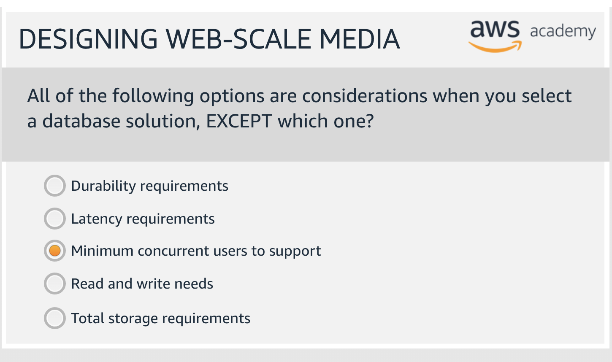
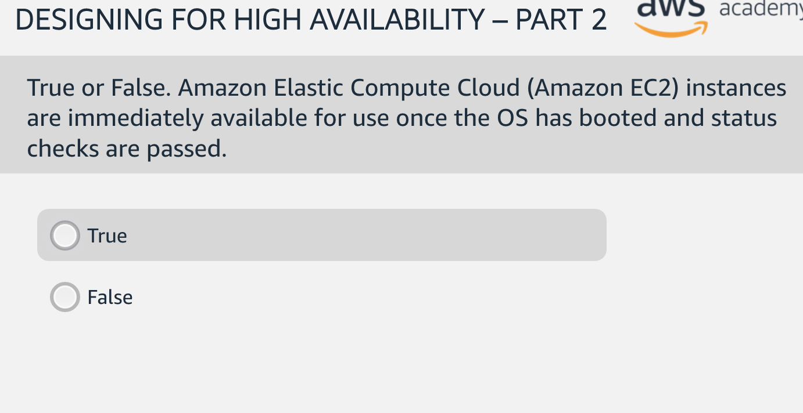
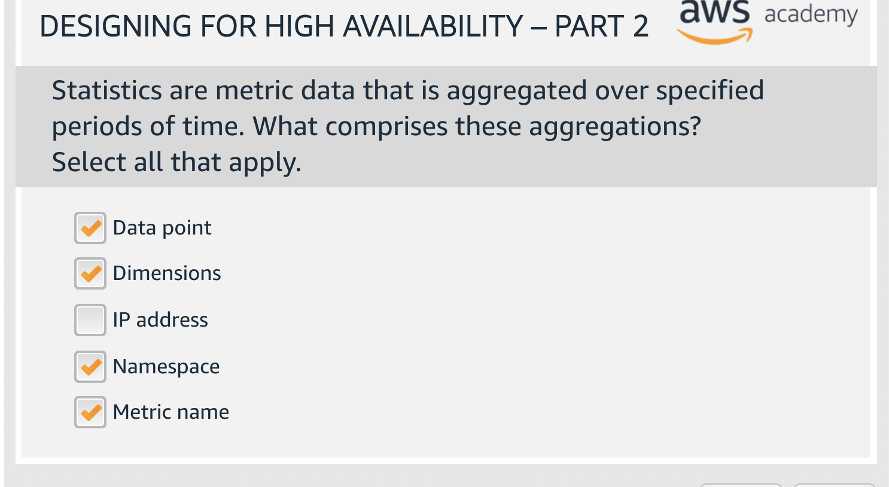
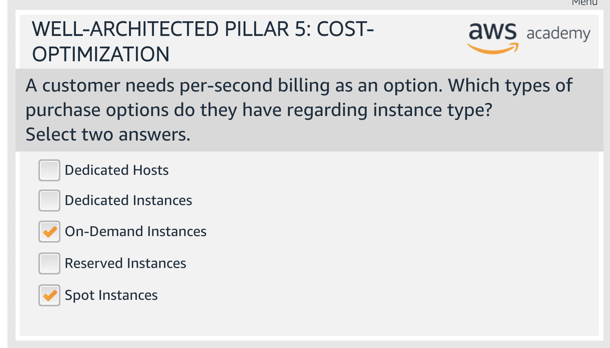

Here are the questions from the AWS Cloud Architecting Knowledge check that I find worth noting.
1
2
Resource deployment and configuration automation
Amazon EC2 Run Command
AWS Systems Manager Run Command lets you remotely and securely manage the configuration of your managed instances. A managed instance is any EC2 instance or on-premises machine in your hybrid environment that has been configured for Systems Manager.
Run Command enables you to automate common administrative tasks and perform ad hoc configuration changes at scale.
AWS Systems Manager
AWS Systems Manager gives you visibility and control of your infrastructure on AWS. Systems Manager provides a unified user interface so you can view operational data from multiple AWS services and allows you to automate operational tasks across your AWS resources.
Systems Manager simplifies resource and application management, shortens the time to detect and resolve operational problems, and makes it easy to operate and manage your infrastructure securely at scale.
AWS OpsWorks
AWS OpsWorks is a configuration management service that provides managed instances of Chef and Puppet. Chef and Puppet are automation platforms that allow you to use code to automate the configurations of your servers. OpsWorks lets you use Chef and Puppet to automate how servers are configured, deployed, and managed across your Amazon EC2 instances or on-premises compute environments.
3
4
Dedicated Host
To use a Dedicated Host, you first allocate hosts for use in your account. You then launch instances onto the hosts by specifying host tenancy for the instance. You must select a specific host for the instance to launch on to, or you can allow it to launch on to any host that has auto-placement enabled and matches its instance type.
If you no longer need an On-Demand host, you can stop the instances running on the host, direct them to launch on a different host, and then release the host.
Dedicated Hosts are also integrated with AWS License Manager. With License Manager, you can create a host resource group, which is a collection of Dedicated Hosts that are managed as a single entity.
Auto-Placement
Auto-placement is configured at the host level. It allows you to manage whether instances that you launch are launched onto a specific host, or onto any available host that has matching configurations.
When the auto-placement of a Dedicated Host is disabled, it only accepts Host tenancy instance launches that specify its unique host ID. This is the default setting for new Dedicated Hosts.
Host affinity
Host affinity is configured at the instance level. It establishes a launch relationship between an instance and a Dedicated Host.
When affinity is set to Host, an instance launched onto a specific host always restarts on the same host if stopped. This applies to both targeted and untargeted launches.
When affinity is set to Off, and you stop and restart the instance, it can be restarted on any available host. However, it tries to launch back onto the last Dedicated Host on which it ran (on a best-effort basis).
Dedicated Instance
Dedicated Instances are Amazon EC2 instances that run in a virtual private cloud (VPC) on hardware that’s dedicated to a single customer. Dedicated Instances that belong to different AWS accounts are physically isolated at a hardware level, even if those accounts are linked to a single payer account. However, Dedicated Instances may share hardware with other instances from the same AWS account that are not Dedicated Instances.
You can change the tenancy of an instance from dedicated(Dedicated Instance) to host(Dedicated Host), or from host to dedicated after you’ve launched it.
If you launch an instance into a VPC that has an instance tenancy of dedicated, your instance is automatically a Dedicated Instance, regardless of the tenancy of the instance.
A Comparison of Dedicated Host vs Dedicated Instance
The chart is found here.
4
5
AWS Config
AWS Config is a service that enables you to assess, audit, and evaluate the configurations of your AWS resources. Config continuously monitors and records your AWS resource configurations and allows you to automate the evaluation of recorded configurations against desired configurations.
With Config, you can review changes in configurations and relationships between AWS resources, dive into detailed resource configuration histories, and determine your overall compliance against the configurations specified in your internal guidelines.
AWS Config Rule
An AWS Config rule represents an AWS Lambda function that you create for a custom rule or a predefined function for an AWS managed rule. The function evaluates configuration items to assess whether your AWS resources comply with your desired configurations.
This function can run when AWS Config detects a configuration change to an AWS resource and at a periodic frequency that you choose (for example, every 24 hours).
6

Offload popular traffic to fully managed services like CloudFront or S3 => Less IaaS to maintain, scale and pay for
7
8
9
Parameters
AWS CloudFormation Parameters
You declare parameters in a template’s Parameters object. A parameter contains a list of attributes that define its value and constraints against its value. The only required attribute is Type, which can be String, Number, or an AWS-specific type. You can also add a Description attribute that tells a user more about what kind of value they should specify.
It contains a list of attributes that can define default values and allowed values.
10
DependsOn Attribute
With DependsOn
attribute you specify that the creation of a specific resource follows another. When you add a DependsOn attribute to a resource, that resource is created only after the creation of the resource specified in the DependsOn attribute.
11
CloudFormation Mappings
The optional Mappings section matches a key to a corresponding set of named values.
For example, if you want to set values based on a region, you can create a mapping that uses the region name as a key and contains the values you want to specify for each specific region. You use the Fn::FindInMap intrinsic function to retrieve values in a map.
You cannot include parameters, pseudo parameters, or intrinsic functions in the Mappings section.
Conditions
The optional Conditions section contains statements that define the circumstances under which entities are created or configured.
For example, you can create a condition and then associate it with a resource or output so that AWS CloudFormation only creates the resource or output if the condition is true.
12

CloudFront distribution
When you create a web distribution, CloudFront assigns a domain name to the distribution, such as d111111abcdef8.cloudfront.net. You can use this domain name in the URLs for your content.
13
14
15
Looking up resources through Config
You can use the AWS Config console, AWS CLI, and AWS Config API to look up the resources that AWS Config has taken an inventory of, or discovered, including deleted resources and resources that AWS Config is not currently recording.
See here
16
Adopt a consumption model
One of Cost Optimisation Design Principles.
Pay only for the computing resources that you require and increase or decrease usage depending on business requirements, not by using elaborate forecasting.
For example, development and test environments are typically only used for eight hours a day during the work week. You can stop these resources when they are not in use for a potential cost savings of 75% (40 hours versus 168 hours).
17
Considerations when selecting a database solution include requirements for availability, consistency, partition tolerance, latency, durability, scalability, and query capability.
18
19
Dead letter queue
Amazon SQS supports dead-letter queue, which other queues (source queues) can target for messages that can’t be processed (consumed) successfully. Dead-letter queues are useful for debugging your application or messaging system because they let you isolate problematic messages to determine why their processing doesn’t succeed.
20
21
22
DynamoDB Consistency and Conflict Resolution
Any changes made to any item in any replica table are replicated to all the other replicas within the same global table. In a global table, a newly written item is usually propagated to all replica tables within seconds.
With a global table, each replica table stores the same set of data items. DynamoDB does not support partial replication of only some of the items.
- An application can read and write data to any replica table. If your application only uses eventually consistent reads and only issues reads against one AWS Region, it will work without any modification.
- If your application requires strongly consistent reads, it must perform all of its strongly consistent reads and writes in the same Region.
DynamoDB does not support strongly consistent reads across Regions.
Therefore, if you write to one Region and read from another Region, the read response might include stale data that doesn’t reflect the results of recently completed writes in the other Region.
Conflicts can arise if applications update the same item in different Regions at about the same time. To help ensure eventual consistency, DynamoDB global tables use a last writer wins reconciliation between concurrent updates, in which DynamoDB makes a best effort to determine the last writer.
With this conflict resolution mechanism, all the replicas will agree on the latest update and converge toward a state in which they all have identical data.
23
24
Amazon DynamoDB is a key-value and document database that delivers single-digit millisecond performance at any scale.
25
26
Monitor ElastiCache
The following CloudWatch metrics offer good insight into ElastiCache performance. In most cases, we recommend that you set CloudWatch alarms for these metrics so that you can take corrective action before performance issues occur:
- CPUUtilization
- EngineCPUUtilization
- SwapUsage
- Evictions
- CurrConnections
See here for details.
27
What does MapReduce do
Amazon EMR uses Apache Hadoop as its distributed data processing engine. Hadoop is an open source, Java software framework that supports data-intensive distributed applications running on large clusters of commodity hardware. Hadoop implements a programming model named “MapReduce,” where the data is divided into many small fragments of work, each of which may be executed on any node in the cluster.
Instead of using one large computer to store and process the data, Hadoop allows clustering multiple computers to analyze massive datasets in parallel more quickly.
28

29
Floating IP
A Floating IP is an IP address that can be instantly moved from one Droplet to another Droplet in the same datacenter.
30
31
AWS Infrastructure Event Management
AWS Infrastructure Event Management is a structured program available to Enterprise Support customers (and Business Support customers for an additional fee) that helps you plan for large-scale events such as product or application launches, infrastructure migrations, and marketing events.
Trusted Advisor
Trusted Advisor is an online tool that provides you real time guidance to help you provision your resources following AWS best practices. Trusted Advisor checks help optimize your AWS infrastructure, increase security and performance, reduce your overall costs, and monitor service limits.
AWS Business Support and AWS Enterprise Support customers get access to all 115 Trusted Advisor checks (14 cost optimization, 17 security, 24 fault tolerance, 10 performance, and 50 service limits) and recommendations.
32
Amazon Inspector
- Amazon Inspector is an automated security assessment service that helps improve the security and compliance of applications deployed on AWS.
- Amazon Inspector automatically assesses applications for exposure, vulnerabilities, and deviations from best practices.
- The AWS security organization is continuously assessing the AWS environment and updating a knowledge base of security best practices and rules. Amazon Inspector makes this expertise available to you in the form of a service that simplifies the process of establishing and enforcing best practices within your AWS environment.
33
Amazon Inspector assessments
Amazon Inspector assessments are offered to you as pre-defined rules packages mapped to common security best practices and vulnerability definitions.
34
35
36
37

38
Metrics
Metrics are uniquely defined by
- a name,
- a namespace, and
- zero or more dimensions.
Each data point in a metric has
- a time stamp,
- and (optionally) a unit of measure.
You can retrieve statistics from CloudWatch for any metric.
Statistics
- Statistics are metric data aggregations over specified periods of time.
- CloudWatch provides statistics based on the metric data points provided by your custom data or provided by other AWS services to CloudWatch.
- Aggregations are made using the:
- namespace,
- metric name,
- dimensions,
- the data point unit of measure,
- within the time period you specify.
39
40
41
42
See this table from AWS Well-Architectured Whitepaper:
43
44
45
Use runbooks to perform procedures
- Runbooks are documented procedures to achieve specific outcomes.
- Start with a valid effective manual process, implement it in code and trigger automated execution where appropriate.
- Consistent and prompt responses to well understood events.
Use playbooks to investigate issues
- Playbooks are the predefined steps to perform to identify an issue.
- Enable consistent and prompt responses to issues that are not well understood.
Use checklist to prepare
You should use a consistent process (including manual or automated checklists) to know when you are ready to go live with your workload or a change.
46
OpsWorks has three offerings,
- AWS Opsworks for Chef Automate,
- AWS OpsWorks for Puppet Enterprise, and
- AWS OpsWorks Stacks.
47
 - very possibly outdated.
Per-second billing
EC2 usage are billed on one second increments, with a minimum of 60 seconds. Similarly, provisioned storage for EBS volumes will be billed per-second increments, with a 60 second minimum. Per-second billing is available for instances launched in:
- On-Demand, Reserved and Spot forms
- All regions and Availability Zones
- Amazon Linux and Ubuntu
This article explains how reserved instances are billed.
48
49
Operational Excellence
- Organization
- OPS 1: How do you determine what your priorities are?
- OPS 2: How do you structure your organization to support your business outcomes?
- OPS 3: How does your organizational culture support your business outcomes?
- Prepare
- OPS 4: How do you design your workload so that you can understand its state?
- OPS 5: How do you reduce defects, ease remediation, and improve flow into production?
- OPS 6: How do you mitigate deployment risks?
- OPS 7: How do you know that you are ready to support a workload?
- Operate
- OPS 8: How do you understand the health of your workload?
- OPS 9: How do you understand the health of your operations?
- OPS 10: How do you manage workload and operations events?
- Evolve
- OPS 11: How do you evolve operations?
50

60
61
62
Amazon ElastiCache Reserved Nodes give you the option to make a low, one-time payment for each cache node you want to reserve and in turn receive a significant discount on the hourly charge for that Node.
63
64
65
66
67
Design Principles for performance efficiency
- Democratize advanced technologies: Make advanced technology implementation easier for your team by delegating complex tasks to your cloud vendor. Rather than asking your IT team to learn about hosting and running a new technology, consider consuming the technology as a service.
- Go global in minutes: Deploying your workload in multiple AWS Regions around the world allows you to provide lower latency and a better experience for your customers at minimal cost.
- Use serverless architectures: Serverless architectures remove the need for you to run and maintain physical servers for traditional compute activities.
- Experiment more often: With virtual and automatable resources, you can quickly carry out comparative testing using different types of instances, storage, or configurations.
- Consider mechanical sympathy: Understand how cloud services are consumed and always use the technology approach that aligns best with your workload goals. For example, consider data access patterns when you select database or storage approaches.
68
Amazon CloudFront Custom SSL
Amazon CloudFront gives you three options for accelerating your entire website while delivering your content securely over HTTPS from all of CloudFront’s edge locations.
Default: CloudFront distribution domain name
By default you can deliver your content to viewers over HTTPS by using your CloudFront distribution domain name in your URLs, for example, https://dxxxxx.cloudfront.net/image.jpg.
If you want to deliver your content over HTTPS using your own domain name and your own SSL certificate, you can use one of our Custom SSL certificate support features.
SNI Custom SSL
Server Name Indication (SNI) Custom SSL relies on the SNI extension of the Transport Layer Security protocol, which allows multiple domains to serve SSL traffic over the same IP address. Amazon CloudFront delivers your content from each edge location and offers the same security as the Dedicated IP Custom SSL feature (see below).
Dedicated IP Custom SSL
If you need to deliver content to browsers that don’t support SNI, you can use the Dedicated IP Custom SSL feature. For this feature the Amazon content delivery network allocates dedicated IP addresses to serve your SSL content at each Edge location.
69
Check that required procedures are adequately captured in runbooks and playbooks is a best practice for Prepare.
70
Highest objective means shortest time.
71
72
73
74
Amazon SQS visibility timeout

When a consumer receives and processes a message from a queue, the message remains in the queue. Amazon SQS doesn’t automatically delete the message. Because Amazon SQS is a distributed system, there’s no guarantee that the consumer actually receives the message (for example, due to a connectivity issue, or due to an issue in the consumer application). Thus, the consumer must delete the message from the queue after receiving and processing it.
Immediately after a message is received, it remains in the queue. To prevent other consumers from processing the message again, Amazon SQS sets a visibility timeout, a period of time during which Amazon SQS prevents other consumers from receiving and processing the message. The default visibility timeout for a message is 30 seconds. The minimum is 0 seconds. The maximum is 12 hours.
75
VPC Endpoint
A VPC endpoint enables you to privately connect your VPC to supported AWS services and VPC endpoint services powered by AWS PrivateLink without requiring an internet gateway, NAT device, VPN connection, or AWS Direct Connect connection.
- Virtual devices.
- Horizontally scaled, redundant, and highly available VPC components.
- Allow communication between instances in your VPC and services without imposing availability risks or bandwidth constraints on your network traffic.
76
- AWS Well-Architected helps cloud architects build secure, high-performing, resilient, and efficient infrastructure for their applications and workloads.
- AWS Well-Architected provides a consistent approach for customers and partners to evaluate architectures, and implement designs that can scale over time.